기혈을 뚫어주고 생명의 원천을 튼튼하게 하는 기적의 명약.
최고급 사향과 러시아산 녹용을 고의현 원장이 직접 엄선하여, 단기간에 극도의 피로를 회복하고 저하된 면역력을 폭발적으로 끌어올립니다.
(막힌 기운을 뚫는 힘)
전신으로 약효를 빠르게 전달하며, 중추신경을 각성시키고 막힌 혈을 강력하게 뚫어주어 뇌 건강과 피로 회복에 탁월합니다.
(양기 보충의 핵심)
부족한 양기를 보충하고 뼈와 근육을 튼튼하게 하며, 조혈 작용을 돕고 쇠약해진 체력을 근본적으로 끌어올립니다.
(보혈과 순환)
혈액을 보충하고 순환을 개선하여 빈혈을 예방하며, 여성의 생리 불순 및 각종 부인과 질환 완화에 도움을 줍니다.
(신장 기능 강화)
신장과 간 기능에 활력을 불어넣어 정력을 증강시키고, 땀이 많이 나거나 소변이 잦은 증상을 다스립니다.
우성한의원은 최고의 약효를 위해 약재 선별부터 금박 코팅까지 모든 과정을 직접 정성껏 조제합니다.
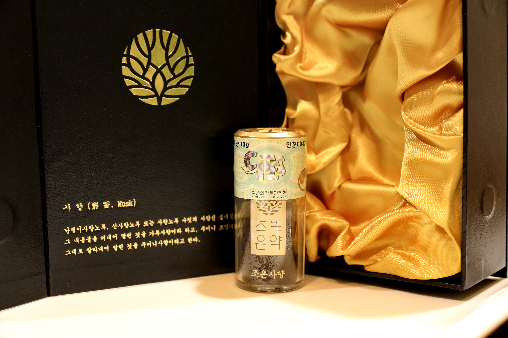
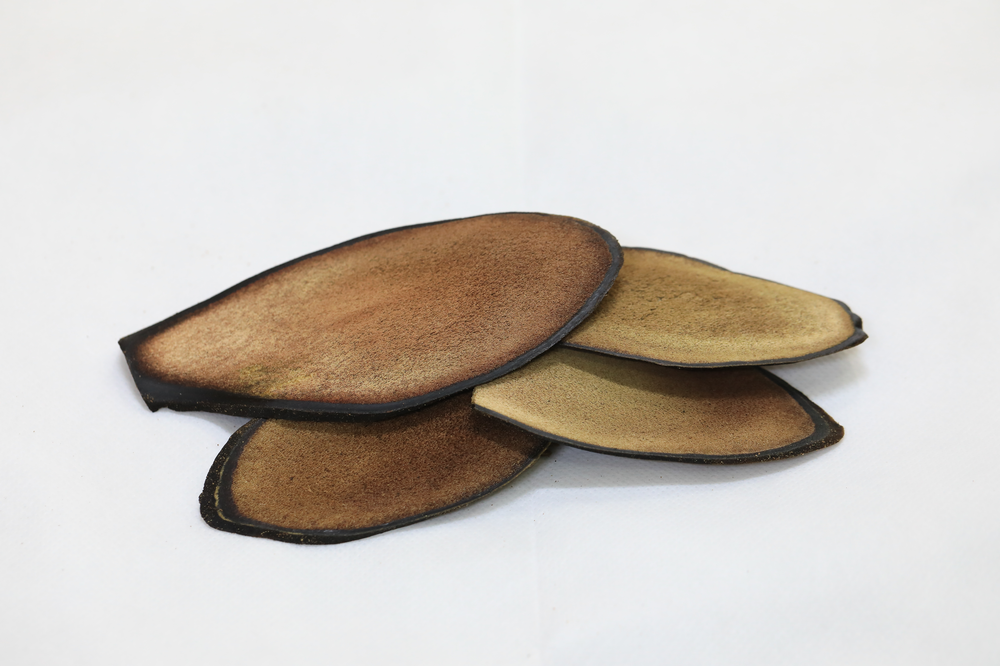
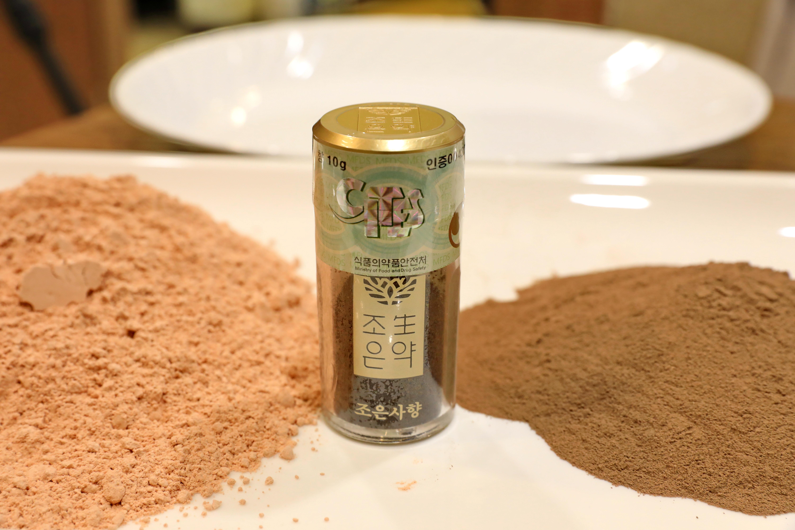
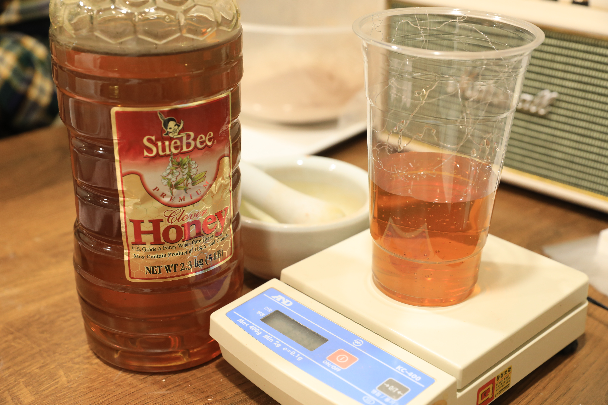
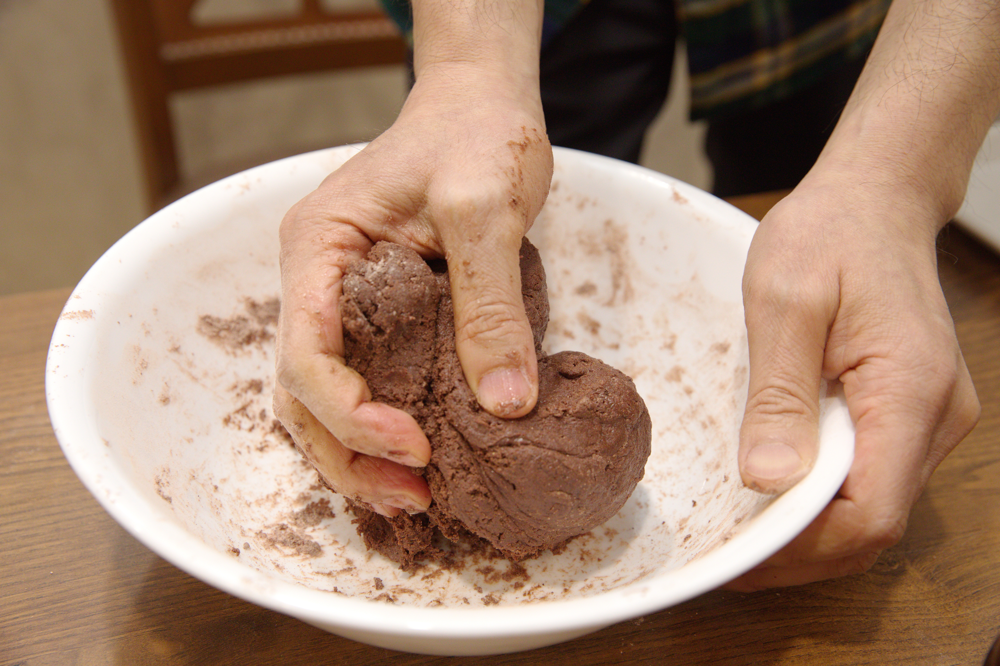
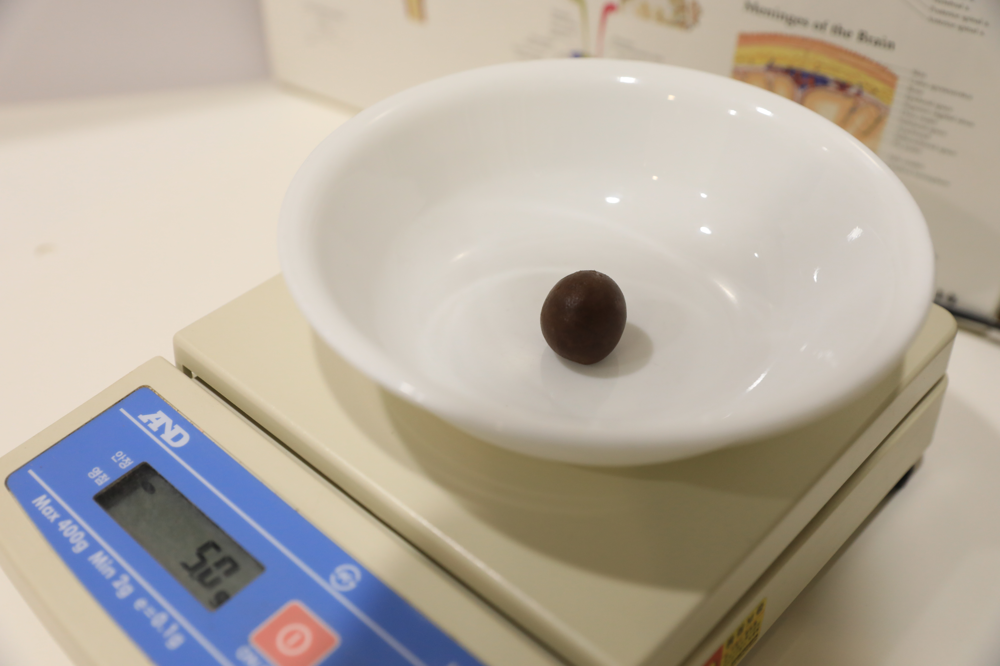
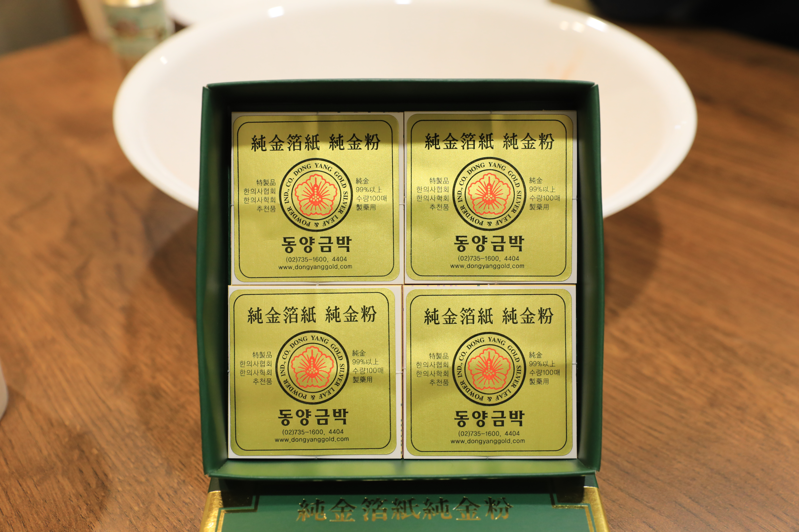
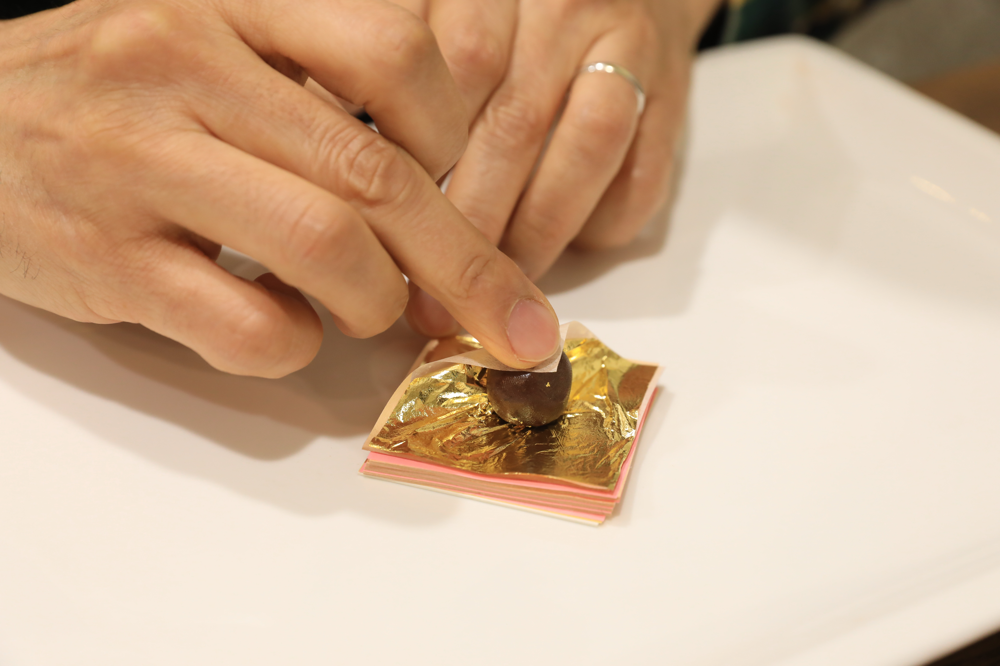
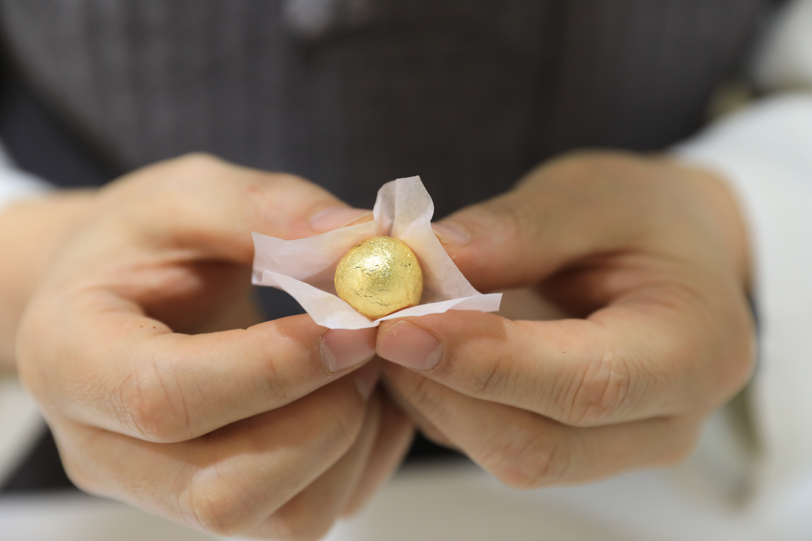
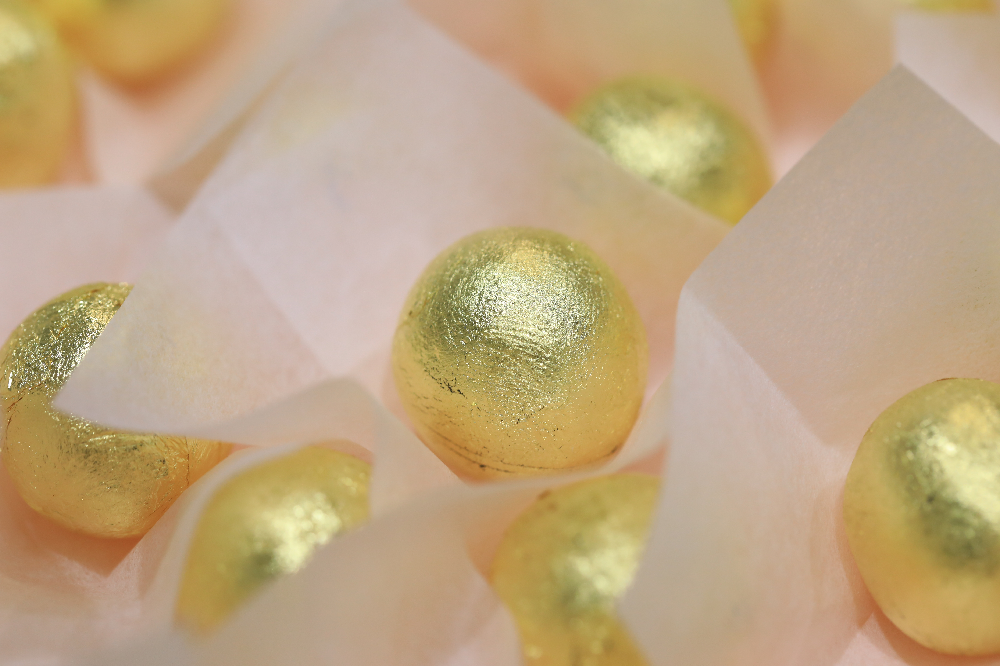
과도한 업무와 스트레스로 자고 일어나도 개운하지 않고 늘 무기력하신 분
막판 스퍼트를 위한 두뇌 피로 개선 및 폭발적인 체력과 집중력이 필요한 분 (총명 공진단)
면역력이 떨어져 잔병치레가 잦고 기력이 쇠하신 부모님을 위한 최고의 효도 선물
질환이나 수술 후 급격히 저하된 체력을 단기간에 빠르고 안전하게 보강해야 하는 분
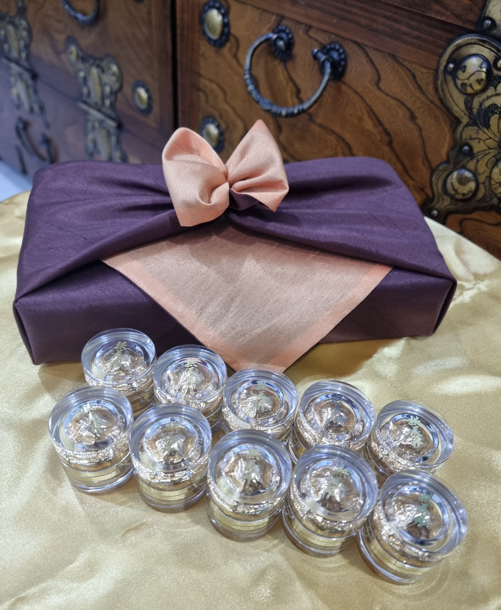
황실의 명약 그대로, 정식 수입 사향을 정량 배합하여 극도의 피로 회복과 저하된 면역력 증진에 탁월한 최고급 공진단입니다.
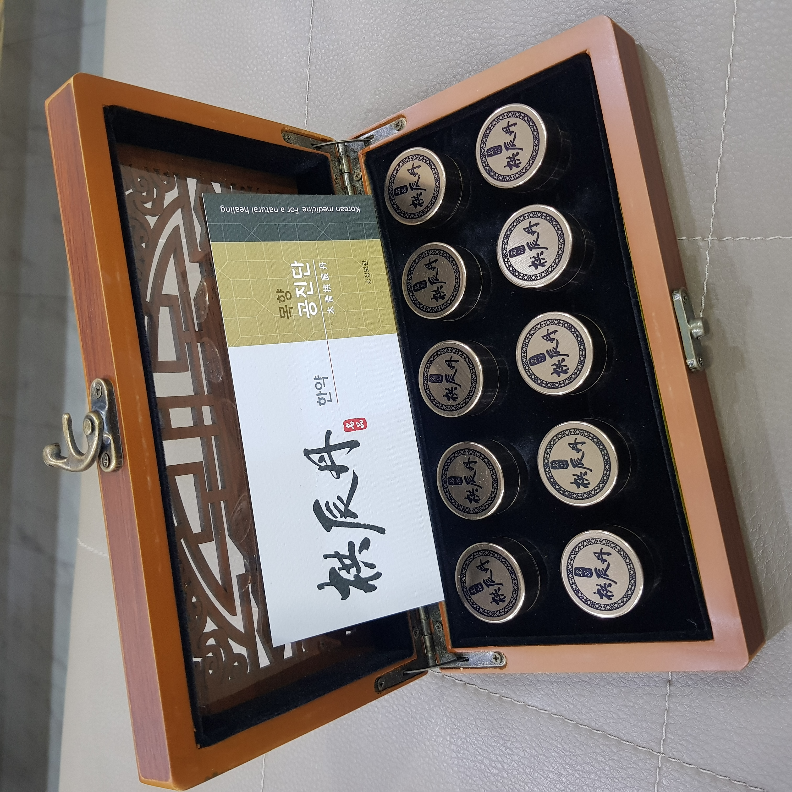
고가의 사향 대신 기를 통하게 하는 '목향'을 배합하였습니다. 일상적인 피로감 개선에 좋으며 장기간 복용하기에 부담이 적습니다.
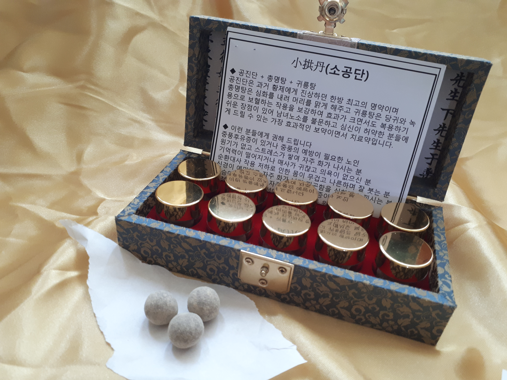
체력이 약한 수험생, 성장기 어린이의 체력 증진과 두뇌 발달, 집중력 향상에 도움을 줄 수 있도록 특별히 조제된 맞춤형 공진단입니다.
엄격한 식약처 인증을 통과한 정식 수입 정품 사향과 최고 등급의 러시아산 녹용(원용)만을 고집합니다.
※ 뛰어난 효능의 원방 사향 공진단 외에도, 일상적인 피로 회복을 위해 가격 부담을 낮추고 목향으로 대체 조제한 목향 공진단, 수험생을 위한 소공단 등 진단 결과에 따라 1:1 맞춤 처방이 가능합니다.
더 많은 진료 정보와 안내는 우성한의원 메인 홈페이지에서 확인하실 수 있습니다.
🏠 우성한의원 메인 홈페이지 가기